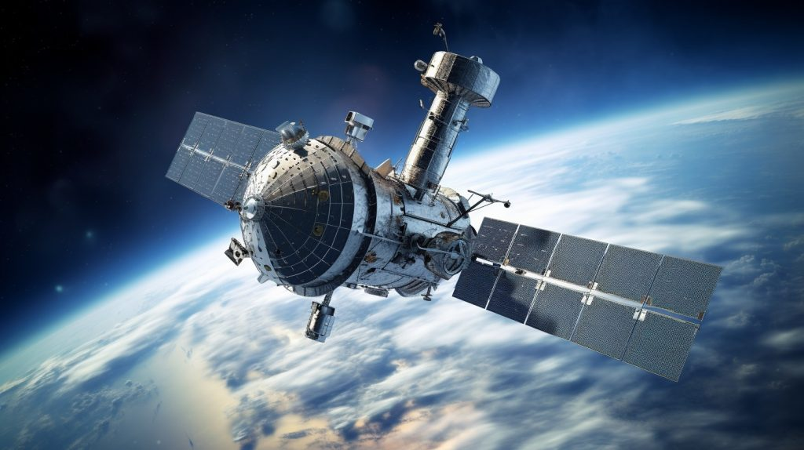

A SpaceX Falcon 9 rocket launched 15 Starlink satellites toward orbit early Thursday (July 20) and came back down for a landing on a ship at sea. The Falcon 9 lifted off from California's foggy Vandenberg Space Force Base on Thursday at 9:39 am IST after a one-day delay. The launch was originally scheduled to occur early Wednesday (July 19), but SpaceX aborted that try with five seconds left in the countdown after receiving an alert from the rocket's upper stage.
On Thursday morning, the Falcon 9 launched without incident, and its first stage successfully landed on the planet. About 9.5 minutes after launch, the rocket successfully executed its vertical touchdown on the SpaceX droneship Of Course I Still Love You. According to a SpaceX mission description, this booster had successfully launched and landed 10 times. The Falcon 9 first stage record is 16, which was set on July 9 and tied on July 15. In the meantime, the top stage of the Falcon 9 carried the 15 Starlink spacecraft to LEO.
According to astronomer and satellite tracker Jonathan McDowell, SpaceX's constellation of broadband satellites, known as Starlink, presently has 4,450 operational spacecraft in low-Earth orbit. For a very long time to come, that number will keep increasing. SpaceX has been given authorization to launch 12,000 Starlink satellites, and it has also requested permission to launch an additional 30,000 satellites.
@2023 SpaceQuest
Terms and conditions
Privacy